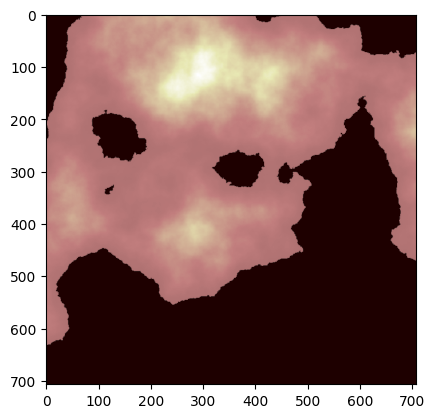
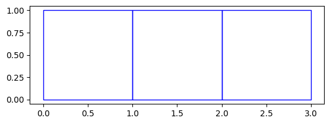

def make_simple_aoi():
df = pd.DataFrame(
data={
"col1": [1, 2, 3],
"lat0": [0.0, 1.0, 2.0],
"lon0": [0.0, 0.0, 0.0],
"lat1": [0.0, 1.0, 2.0],
"lon1": [1.0, 1.0, 1.0],
"lat2": [1.0, 2.0, 3.0],
"lon2": [1.0, 1.0, 1.0],
"lat3": [1.0, 2.0, 3.0],
"lon3": [0.0, 0.0, 0.0],
}
)
def square(row):
return Polygon(
(
[
(row.lat0, row.lon0),
(row.lat1, row.lon1),
(row.lat2, row.lon2),
(row.lat3, row.lon3),
]
)
)
return gpd.GeoDataFrame(df, geometry=df.apply(square, axis=1), crs="EPSG:3857") # Use 3857 to match terrain CRS
simple_aoi = make_simple_aoi()
terrain_file = "../data/sample_terrain.tif"Raster Zonal Stats
generating zonal stats from raster data

Note: This module is a thin layer on top of the rasterstats and exactextract packages to make its interface more compatible with the other geowrangler modules (e.g. vector zonal stats)
create_raster_zonal_stats
create_raster_zonal_stats (aoi:Union[str,pathlib.Path,geopandas.geodataf rame.GeoDataFrame], data:Union[str,pathlib.Path], aggregation:Dict[str,Any], extra_args:Dict[str,Any]={'layer': 0, 'band': 1, 'nodata': None, 'affine': None, 'all_touched': False})
Compute zonal stats with a vector areas of interest (aoi) from raster data sources. This is a thin layer over the zonal_stats method from the rasterstats python package for compatibility with other geowrangler modules. This method currently only supports 1 band for each call, so if you want to create zonal stats for multiple bands with the same raster data, you can call this method for each band (make sure to specify the correct band in the extra_args parameter). See https://pythonhosted.org/rasterstats/manual.html#zonal-statistics for more details
| Type | Default | Details | |
|---|---|---|---|
| aoi | Union | The area of interest geodataframe, or path to the vector file | |
| data | Union | The path to the raster data file | |
| aggregation | Dict | A dict specifying the aggregation. See create_zonal_stats from the geowrangler.vector_zonal_stats module for more details |
|
| extra_args | Dict | {‘layer’: 0, ‘band’: 1, ‘nodata’: None, ‘affine’: None, ‘all_touched’: False} | Extra arguments passed to rasterstats.zonal_stats method |
| Returns | GeoDataFrame |
import matplotlib.pyplot as plt
import numpy as np
import rasteriowith rasterio.open(terrain_file) as src:
data = src.read(1)
data_crs = src.crs
data_bounds = src.bounds
print(data.shape, data_crs, data_bounds)(707, 707) EPSG:3857 BoundingBox(left=-20.0, bottom=-19.994, right=19.994, top=20.0)simple_aoi.total_boundsarray([0., 0., 3., 1.])ax = plt.imshow(data, cmap="pink")
ax = simple_aoi.plot(facecolor="none", edgecolor="blue")
results = create_raster_zonal_stats(
simple_aoi,
terrain_file,
aggregation=dict(func=["mean", "max", "min", "std"], column="elevation"),
extra_args=dict(nodata=np.nan),
)CPU times: user 12.9 ms, sys: 1.65 ms, total: 14.5 ms
Wall time: 13.8 msresults| col1 | lat0 | lon0 | lat1 | lon1 | lat2 | lon2 | lat3 | lon3 | geometry | elevation_min | elevation_max | elevation_mean | elevation_std | |
|---|---|---|---|---|---|---|---|---|---|---|---|---|---|---|
| 0 | 1 | 0.0 | 0.0 | 0.0 | 1.0 | 1.0 | 1.0 | 1.0 | 0.0 | POLYGON ((0 0, 0 1, 1 1, 1 0, 0 0)) | 1238.734161 | 1444.722213 | 1339.126726 | 64.362218 |
| 1 | 2 | 1.0 | 0.0 | 1.0 | 1.0 | 2.0 | 1.0 | 2.0 | 0.0 | POLYGON ((1 0, 1 1, 2 1, 2 0, 1 0)) | 1222.409102 | 1425.920852 | 1311.903997 | 51.286449 |
| 2 | 3 | 2.0 | 0.0 | 2.0 | 1.0 | 3.0 | 1.0 | 3.0 | 0.0 | POLYGON ((2 0, 2 1, 3 1, 3 0, 2 0)) | 1231.569771 | 1402.859628 | 1319.624868 | 45.298326 |
Check that create_raster_zonal_stats uses the nodata attribute set in the tif file if extra_args.nodata is set to None
# Load in admin bounds
phl_adm = gpd.read_file("../data/region3_admin.geojson")If the nodata parameter is explicitly set to -999999, the Population count should be > 0.
grid_aoi_results = create_raster_zonal_stats(
phl_adm,
"../data/phl_ppp_2020_constrained.tif",
aggregation=dict(
func=["sum"],
column="population",
output=["population_count"],
fillna=[True],
),
extra_args=dict(nodata=-99999),
)grid_aoi_results| Reg_Code | Reg_Name | Reg_Alt_Name | geometry | population_count | |
|---|---|---|---|---|---|
| 0 | 030000000 | Region III | Central Luzon | MULTIPOLYGON (((120.11687 14.76309, 120.11684 ... | 10983338.0 |
If the nodata parameter is not set, create_raster_zonal_stats should use the nodata attribute set by the geotiff file so that population count should still be > 0.
grid_aoi_results = create_raster_zonal_stats(
phl_adm,
"../data/phl_ppp_2020_constrained.tif",
aggregation=dict(
func=["sum"],
column="population",
output=["population_count"],
fillna=[True],
),
)grid_aoi_results| Reg_Code | Reg_Name | Reg_Alt_Name | geometry | population_count | |
|---|---|---|---|---|---|
| 0 | 030000000 | Region III | Central Luzon | MULTIPOLYGON (((120.11687 14.76309, 120.11684 ... | 10983338.0 |
Exactextract Zonal Stats
The next section provides an alternative implementation of raster zonal statistics using the exactextract package. This package promises more exact zonal statistics by taking into account pixel fractions vs rasterstats that assigns the pixels to a polygon based on their centroid locations.
exactextract provides a fast and accurate algorithm for summarizing values in the portion of a raster dataset that is covered by a polygon, often referred to as zonal statistics. Unlike other zonal statistics implementations, it takes into account raster cells that are partially covered by the polygon.
Advantages
- Results from
exactextractare more precise thanrasterstatsdue to handling pixel fractions in its calculations exactextractis faster to run thanrasterstatsfor the same input AOI and raster data
Disadvantages
- nodata value handling is not yet supported by the
create_exactextract_zonal_stats()method. To handle NODATA, it is recommended to create a raster file with a properly-set NODATA value, i.e.
import rasterio as rio
existing_raster = 'path/to/existing_raster.tif'
new_raster = 'path/to/new_raster.tif'
user_defined_nodata = -9999
with rio.open(existing_raster) as src:
profile = src.profile
profile.update(nodata=user_defined_nodata)
data = src.read()
# Write the new raster with the updated profile with nodata
with rio.open(output_raster_path, 'w', **profile) as dst:
dst.write(data)/opt/hostedtoolcache/Python/3.10.16/x64/lib/python3.10/site-packages/fastcore/docscrape.py:230: UserWarning: potentially wrong underline length...
Example usage
-------- in
Computes zonal statistics from raster data sources using vector areas of interest (AOI).
...
else: warn(msg)create_exactextract_zonal_stats
create_exactextract_zonal_stats (aoi:Union[str,pathlib.Path,geopandas.ge odataframe.GeoDataFrame], data:Union[str,pathlib.Path], aggregatio n:Union[Dict,List[Dict[str,Any]]], include_cols:List[str]=None, include_geom:bool=True, extra_args:dict={'strategy': 'feature- sequential', 'max_cells_in_memory': 30000000})
*Computes zonal statistics from raster data sources using vector areas of interest (AOI).
This function is a wrapper over the exact_extract method from the exactextract Python package, designed for compatibility with other geowrangler modules. It takes a list of agg specs, with each agg spec applied to a specific band. See https://github.com/isciences/exactextract/blob/master/python/README.md for more details.*
| Type | Default | Details | |
|---|---|---|---|
| aoi | Union | A GeoDataframe specifying geometries. | |
| data | Union | The path to the raster data file | |
| aggregation | Union | Dictionary or list of dictionaries specifying the aggregation | |
| include_cols | List | None | If not None, list of columns from input AOI to include in output |
| include_geom | bool | True | If false, drop geometry column. include_cols takes priority. |
| extra_args | dict | {‘strategy’: ‘feature-sequential’, ‘max_cells_in_memory’: 30000000} | Extra arguments to pass to exactextract.exact_extract(). “include_cols”, “include_geom”, and “output” arguments are ignored. |
| Returns | GeoDataFrame | Extra arguments to pass to `exactextract.exact_extract(). Ignores output, include_geom, and include_cols. |
Usage Examples of create_exactextract_zonal_stats()
# Single band with single aggregation
results = create_exactextract_zonal_stats(
simple_aoi.to_crs("EPSG:3857"),
terrain_file,
aggregation=dict(band=1, func=["sum", "max", "min", "stdev"], output="elevation")
)
resultsCPU times: user 10.2 ms, sys: 2.27 ms, total: 12.4 ms
Wall time: 13.7 ms| col1 | lat0 | lon0 | lat1 | lon1 | lat2 | lon2 | lat3 | lon3 | geometry | elevation_sum | elevation_max | elevation_min | elevation_stdev | |
|---|---|---|---|---|---|---|---|---|---|---|---|---|---|---|
| 0 | 1 | 0.0 | 0.0 | 0.0 | 1.0 | 1.0 | 1.0 | 1.0 | 0.0 | POLYGON ((0 0, 0 1, 1 1, 1 0, 0 0)) | 417459.46875 | 1444.722213 | 1232.164947 | 63.263985 |
| 1 | 2 | 1.0 | 0.0 | 1.0 | 1.0 | 2.0 | 1.0 | 2.0 | 0.0 | POLYGON ((1 0, 1 1, 2 1, 2 0, 1 0)) | 409081.15625 | 1425.920852 | 1213.356474 | 50.523487 |
| 2 | 3 | 2.0 | 0.0 | 2.0 | 1.0 | 3.0 | 1.0 | 3.0 | 0.0 | POLYGON ((2 0, 2 1, 3 1, 3 0, 2 0)) | 411552.87500 | 1402.859628 | 1220.031795 | 44.781490 |
# Single band with multiple aggregations
results = create_exactextract_zonal_stats(
simple_aoi.to_crs("EPSG:3857"),
terrain_file,
aggregation=[
dict(band=1, func=["max", "min"], output=["highest_elevation", "lowest_elevation"]),
dict(band=1, func=["mean"], output="elevation") # output will be elevation_mean
],
)
resultsCPU times: user 9.15 ms, sys: 1.12 ms, total: 10.3 ms
Wall time: 9.59 ms| col1 | lat0 | lon0 | lat1 | lon1 | lat2 | lon2 | lat3 | lon3 | geometry | highest_elevation | lowest_elevation | elevation_mean | |
|---|---|---|---|---|---|---|---|---|---|---|---|---|---|
| 0 | 1 | 0.0 | 0.0 | 0.0 | 1.0 | 1.0 | 1.0 | 1.0 | 0.0 | POLYGON ((0 0, 0 1, 1 1, 1 0, 0 0)) | 1444.722213 | 1232.164947 | 1335.873047 |
| 1 | 2 | 1.0 | 0.0 | 1.0 | 1.0 | 2.0 | 1.0 | 2.0 | 0.0 | POLYGON ((1 0, 1 1, 2 1, 2 0, 1 0)) | 1425.920852 | 1213.356474 | 1309.062378 |
| 2 | 3 | 2.0 | 0.0 | 2.0 | 1.0 | 3.0 | 1.0 | 3.0 | 0.0 | POLYGON ((2 0, 2 1, 3 1, 3 0, 2 0)) | 1402.859628 | 1220.031795 | 1316.971924 |
# Multiple band
grid_exactextract_aoi_results = create_exactextract_zonal_stats(
phl_adm,
"../data/ph_s5p_AER_AI_340_380.tiff",
aggregation=[
dict(band=1, func=["mean", "sum"], nodata_val=-9999), # default - band1_mean, band1_sum
dict(band=2, func=["mean", "sum"]), # default - band2_mean, band2_sum
dict(band=2, func=["mean", "sum"], output="prefix"), # prefix_mean, prefix_sum
dict(band=1, func=["mean", "sum", "count"], output=["aer_ai_mean", "aer_ai_sum", "aer_ai_count"]),
]
)
display(grid_exactextract_aoi_results)| Reg_Code | Reg_Name | Reg_Alt_Name | geometry | band_1_mean | band_1_sum | band_2_mean | band_2_sum | prefix_mean | prefix_sum | aer_ai_mean | aer_ai_sum | aer_ai_count | |
|---|---|---|---|---|---|---|---|---|---|---|---|---|---|
| 0 | 030000000 | Region III | Central Luzon | MULTIPOLYGON (((120.11687 14.76309, 120.11684 ... | 0.000279 | 0.12919 | 0.015252 | 7.070237 | 0.015252 | 7.070237 | 0.000279 | 0.12919 | 463.568115 |
CPU times: user 423 ms, sys: 34.9 ms, total: 458 ms
Wall time: 468 ms# Multiple band test -> include_cols
grid_exactextract_aoi_results = create_exactextract_zonal_stats(
phl_adm,
"../data/ph_s5p_AER_AI_340_380.tiff",
aggregation=[
dict(band=1, func=["mean", "sum"], nodata_val=-9999), # default - band1_mean, band1_sum
dict(band=2, func=["mean", "sum"]), # default - band2_mean, band2_sum
dict(band=2, func=["mean", "sum"], output="prefix"), # prefix_mean, prefix_sum
dict(band=1, func=["mean", "sum", "count"], output=["aer_ai_mean", "aer_ai_sum", "aer_ai_count"]),
],
include_cols=["Reg_Code"],
)
display(grid_exactextract_aoi_results)| Reg_Code | band_1_mean | band_1_sum | band_2_mean | band_2_sum | prefix_mean | prefix_sum | aer_ai_mean | aer_ai_sum | aer_ai_count | |
|---|---|---|---|---|---|---|---|---|---|---|
| 0 | 030000000 | 0.000279 | 0.12919 | 0.015252 | 7.070237 | 0.015252 | 7.070237 | 0.000279 | 0.12919 | 463.568115 |
CPU times: user 353 ms, sys: 27.5 ms, total: 381 ms
Wall time: 383 ms# Using include_geom
grid_exactextract_aoi_results = create_exactextract_zonal_stats(
phl_adm,
"../data/ph_s5p_AER_AI_340_380.tiff",
aggregation=[
dict(band=1, func=["mean", "sum"], nodata_val=-9999), # default - band1_mean, band1_sum
dict(band=2, func=["mean", "sum"]), # default - band2_mean, band2_sum
dict(band=2, func=["mean", "sum"], output="prefix"), # prefix_mean, prefix_sum
dict(band=1, func=["mean", "sum", "count"], output=["aer_ai_mean", "aer_ai_sum", "aer_ai_count"]),
],
include_geom=False
)
display(grid_exactextract_aoi_results)| Reg_Code | Reg_Name | Reg_Alt_Name | band_1_mean | band_1_sum | band_2_mean | band_2_sum | prefix_mean | prefix_sum | aer_ai_mean | aer_ai_sum | aer_ai_count | |
|---|---|---|---|---|---|---|---|---|---|---|---|---|
| 0 | 030000000 | Region III | Central Luzon | 0.000279 | 0.12919 | 0.015252 | 7.070237 | 0.015252 | 7.070237 | 0.000279 | 0.12919 | 463.568115 |
CPU times: user 364 ms, sys: 30.1 ms, total: 394 ms
Wall time: 418 ms# Using include_geom
grid_exactextract_aoi_results = create_exactextract_zonal_stats(
phl_adm,
"../data/ph_s5p_AER_AI_340_380.tiff",
aggregation=[
dict(band=1, func=["mean", "sum"], nodata_val=-9999), # default - band1_mean, band1_sum
dict(band=2, func=["mean", "sum"]), # default - band2_mean, band2_sum
dict(band=2, func=["mean", "sum"], output="prefix"), # prefix_mean, prefix_sum
dict(band=1, func=["mean", "sum", "count"], output=["aer_ai_mean", "aer_ai_sum", "aer_ai_count"]),
],
include_cols=["Reg_Code"]
)
display(grid_exactextract_aoi_results, type(grid_exactextract_aoi_results))| Reg_Code | band_1_mean | band_1_sum | band_2_mean | band_2_sum | prefix_mean | prefix_sum | aer_ai_mean | aer_ai_sum | aer_ai_count | |
|---|---|---|---|---|---|---|---|---|---|---|
| 0 | 030000000 | 0.000279 | 0.12919 | 0.015252 | 7.070237 | 0.015252 | 7.070237 | 0.000279 | 0.12919 | 463.568115 |
pandas.core.frame.DataFrameCPU times: user 357 ms, sys: 28.6 ms, total: 385 ms
Wall time: 390 ms# Using include_geom and include_cols
# As geometry is not in include_cols, it is prioritzed over include_geom=True
grid_exactextract_aoi_results = create_exactextract_zonal_stats(
phl_adm,
"../data/ph_s5p_AER_AI_340_380.tiff",
aggregation=[
dict(band=1, func=["mean", "sum"], nodata_val=-9999), # default - band1_mean, band1_sum
dict(band=2, func=["mean", "sum"]), # default - band2_mean, band2_sum
dict(band=2, func=["mean", "sum"], output="prefix"), # prefix_mean, prefix_sum
dict(band=1, func=["mean", "sum", "count"], output=["aer_ai_mean", "aer_ai_sum", "aer_ai_count"]),
],
include_cols=["Reg_Code"],
include_geom=True
)
display(grid_exactextract_aoi_results, type(grid_exactextract_aoi_results))| Reg_Code | band_1_mean | band_1_sum | band_2_mean | band_2_sum | prefix_mean | prefix_sum | aer_ai_mean | aer_ai_sum | aer_ai_count | |
|---|---|---|---|---|---|---|---|---|---|---|
| 0 | 030000000 | 0.000279 | 0.12919 | 0.015252 | 7.070237 | 0.015252 | 7.070237 | 0.000279 | 0.12919 | 463.568115 |
pandas.core.frame.DataFrameCPU times: user 357 ms, sys: 30.6 ms, total: 388 ms
Wall time: 391 ms# Multiple band test - from file
grid_exactextract_aoi_results = create_exactextract_zonal_stats(
"../data/region3_admin.geojson",
"../data/ph_s5p_AER_AI_340_380.tiff",
aggregation=[
dict(band=1, func=["mean", "sum"], nodata_val=-9999), # default - band1_mean, band1_sum
dict(band=2, func=["mean", "sum"]), # default - band2_mean, band2_sum
dict(band=2, func=["mean", "sum"], output="prefix"), # prefix_mean, prefix_sum
dict(band=1, func=["mean", "sum", "count"], output=["aer_ai_mean", "aer_ai_sum", "aer_ai_count"]),
],
)
display(grid_exactextract_aoi_results)| Reg_Code | Reg_Name | Reg_Alt_Name | geometry | band_1_mean | band_1_sum | band_2_mean | band_2_sum | prefix_mean | prefix_sum | aer_ai_mean | aer_ai_sum | aer_ai_count | |
|---|---|---|---|---|---|---|---|---|---|---|---|---|---|
| 0 | 030000000 | Region III | Central Luzon | MULTIPOLYGON (((120.11687 14.76309, 120.11684 ... | 0.000279 | 0.12919 | 0.015252 | 7.070237 | 0.015252 | 7.070237 | 0.000279 | 0.12919 | 463.568115 |
CPU times: user 651 ms, sys: 46.8 ms, total: 697 ms
Wall time: 703 ms
Warning
create_exactextract_zonal_stats() will always return a geopandas.GeoDataFrame. A warning is returned if output (e.g. gdal, geojson) is specified in extra_args.
# Multiple band test - gdal -> UNSUPPORTED
grid_exactextract_aoi_results = create_exactextract_zonal_stats(
phl_adm,
"../data/ph_s5p_AER_AI_340_380.tiff",
aggregation=[
dict(band=1, func=["mean", "sum"], nodata_val=-9999), # default - band1_mean, band1_sum
dict(band=2, func=["mean", "sum"]), # default - band2_mean, band2_sum
dict(band=2, func=["mean", "sum"], output="prefix"), # prefix_mean, prefix_sum
dict(band=1, func=["mean", "sum", "count"], output=["aer_ai_mean", "aer_ai_sum", "aer_ai_count"]),
],
extra_args = dict(output="gdal")
)
display(grid_exactextract_aoi_results)/var/folders/f4/9fptcl253fldfv71r9tdfyzc0000gn/T/ipykernel_35790/1525768804.py:74: UserWarning: output in `extra_args` is ignored. Output is set to 'pandas'. Refer to `exactextract.exact_extract()` to use other output options.
warnings.warn("output in `extra_args` is ignored. Output is set to 'pandas'. Refer to `exactextract.exact_extract()` to use other output options.")| Reg_Code | Reg_Name | Reg_Alt_Name | geometry | band_1_mean | band_1_sum | band_2_mean | band_2_sum | prefix_mean | prefix_sum | aer_ai_mean | aer_ai_sum | aer_ai_count | |
|---|---|---|---|---|---|---|---|---|---|---|---|---|---|
| 0 | 030000000 | Region III | Central Luzon | MULTIPOLYGON (((120.11687 14.76309, 120.11684 ... | 0.000279 | 0.12919 | 0.015252 | 7.070237 | 0.015252 | 7.070237 | 0.000279 | 0.12919 | 463.568115 |
CPU times: user 430 ms, sys: 40.3 ms, total: 470 ms
Wall time: 482 ms